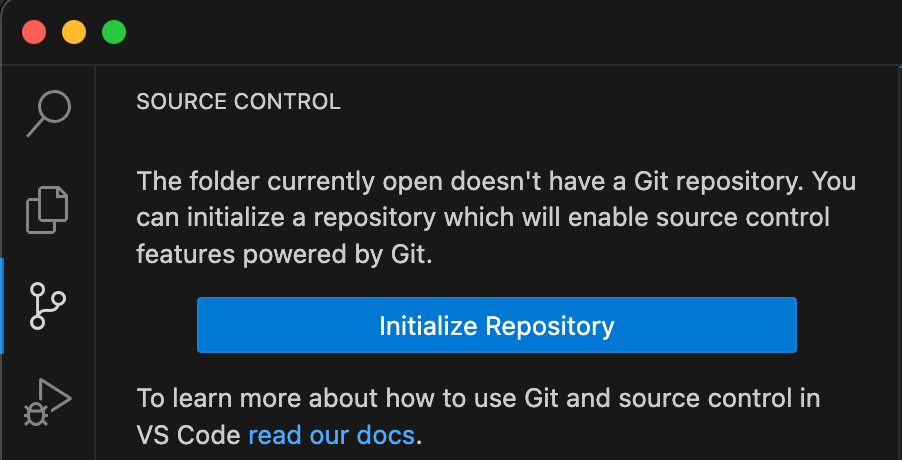
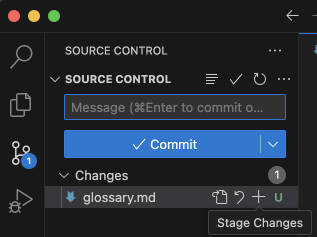
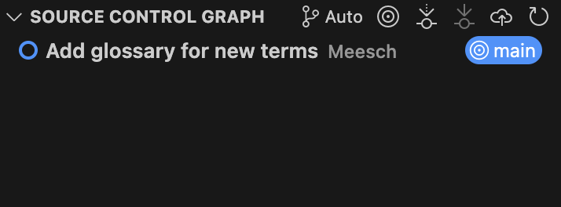

Setting up
Objectives
In this module, you will learn:
- Why to use Git
- How to initialize a Git repository
- How to make a commit
prerequisites
You should have already created a Github account and installed VSCode (or another IDE).
Version Control using Git
Version Control is one of the fundamental concepts in creating software. But what is version control, and why should you care?
- Version control
- a system that records changes to a file or set of files over time so that you can recall specific versions later.
When you have a history of your work, you can always go back to a previous version to restore lost functions, find out where bugs were introduced, and most importantly, blame whoever is at fault.
Git is a version control system for tracking changes in computer files and coordinating work on those files among multiple people. Git allows for this by using commits, the building blocks of your history. It is primarily used for source code management in software development but it can be used to track changes in files in general - it is particularly effective for tracking text-based files (such as code files). Every change recorded by Git remains part of the project history and can be retrieved at a later date, so even if you make a mistake you can revert to a point before it.
- Commit
- a data object which contains the changes made to the repository, the author of the changes, and the time+date of the changes. It has a unique identifier in SHA format, which can be used to refer back to this specific commit. It also includes a 'message': a description of the changes made in a short format.
What is a good commit?
- Commits should be small, logical units: every commit should only accomplish one thing
- Commit early, commit often
- Convention: write your messages using the imperative, e.g.:
git commit -m "fix bug in analysis function"git commit -m "add analysis feature"

Exercise: Create a repository
Create a sandbox repository on your own machine. You will use this repository to practice Git commands and have a playground where you can try anything you like.
- Step 1: Create a directory called
sandbox_NAME(replace NAME with your own name). Open this directory using VSCode (Open Folder...). - Step 2: In the Source Control tab (to the left), select 'Initialize Repository', this will automatically create a repository in a subdirectory called
.git, which you can see if you runls -Ain the terminal or in the Explorer tab.
- Step 3: Create a file called
glossary.md(a Markdown file), which you can use to write down new terms that you have learned during this course with their definitions. Add at least one term and its definition/explanation. - Step 4: Add the file to the staging area by clicking the
+symbol next to the filename in the Source Control tab.
- Step 5: Commit the new file after typing a message into the text box.
- Step 6: Check the commit history to confirm that it worked by selecting the Source Control Graph (at the bottom of the Source Control tab)

- Step 1: Create a directory called
sandbox_NAME(replace NAME with your own name) - Step 2: Run
git initin this directory using the terminal: this will automatically create a repository in a subdirectory called.git, which you can see if you runls -A. - Step 3: Create a file called
glossary.md(a Markdown file), which you can use to write down new terms that you have learned during this course with their definitions. Add at least one term and its definition/explanation. - Step 4: Add the file to the staging area:
git add glossary.md - Step 5: Commit the new file:
git commit -m "<YOUR MESSAGE HERE>" - Step 6: Check the commit history to confirm that it worked:
git log
Works cited:
https://carpentries-incubator.github.io/python-intermediate-development/14-collaboration-using-git.html https://s3-school.github.io/s3-2026-lectures/2.2-git-and-github/main/